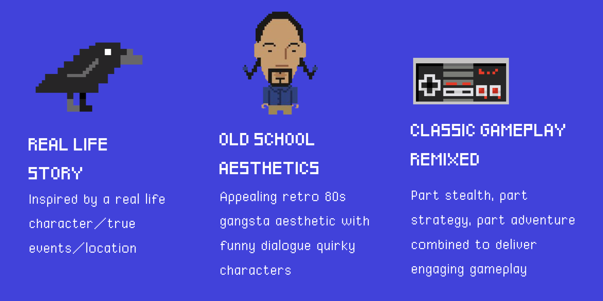

Murder of One - Canuck the Crow
A top-down 2D puzzle-adventure game

Overview
Murder of One is a top-down, tap to move, problem solving adventure game designed for mobile casual gamers (Android, iOS) ages 12+.
Inspired by true events, this game is about your adventure through the streets of East Vancouver as the infamous bird, Canuck the Crow, on a mission to get home. After narrowly escaping the clutches of a local mafia leader looking to transform you into his private jewel thief, you wake up at YVR with a broken wing and a case of amnesia. The only thing you remember is your human friend, Shawn. With only your crow’s feet to guide you – you must navigate through the eats, beats and side streets of East Van. Undertaking human-like tasks to take what you need to survive, you learn that if you can generate enough local press in the news, social media and more to alert Shawn – you might find your way back to your nest. With the mafia still on your trail, will you make enough mischief to attract the right press and get home? Or will your mischief lead you to eat crow instead of being one? Use your shifty talents to make headlines, make your way home and live to fly and other day!
Role
Developer + Project Manager
Responsibilities
Gameplay programming
Delegating feature ownerships for weekly sprints
Laying out a product development rodmap and ensuring milestones are achieved on time
Facilitating team ideation, sprint planning, and product development throughout
Gameplay
With an easy tap to move interface, the player will explore multiple locations in Metro Vancouver as Canuck the Crow. As Canuck is healing from a broken wing, he is only able to walk and interact with his environment to find useful items or talk to characters, triggering an information/dialogue box to acquire new information. New items are placed in a simple on-screen inventory that the player can access to work through problem solving challenges such as using a metal object airport security scanner to distract enemy NPCs and pick-pocket a key cards from a maintenance NPC. Players can then unlock doors or other areas of game play to continue solving challenges in order to collect the final headline making quest item and complete a chapter.
Look+Feel
Inspired by current retro games like Stranger Things, Hotline Miami and Monaco, the game’s look and feel is based on classic 80s games with pixel artwork and 8-bit soundtrack and UI sounds.